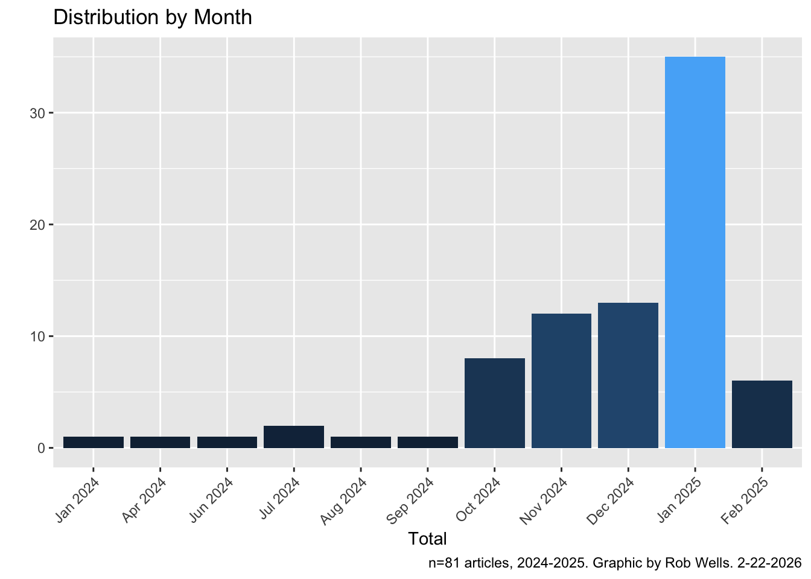
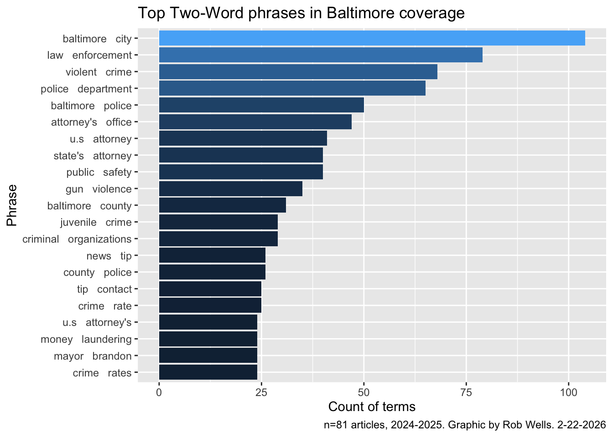
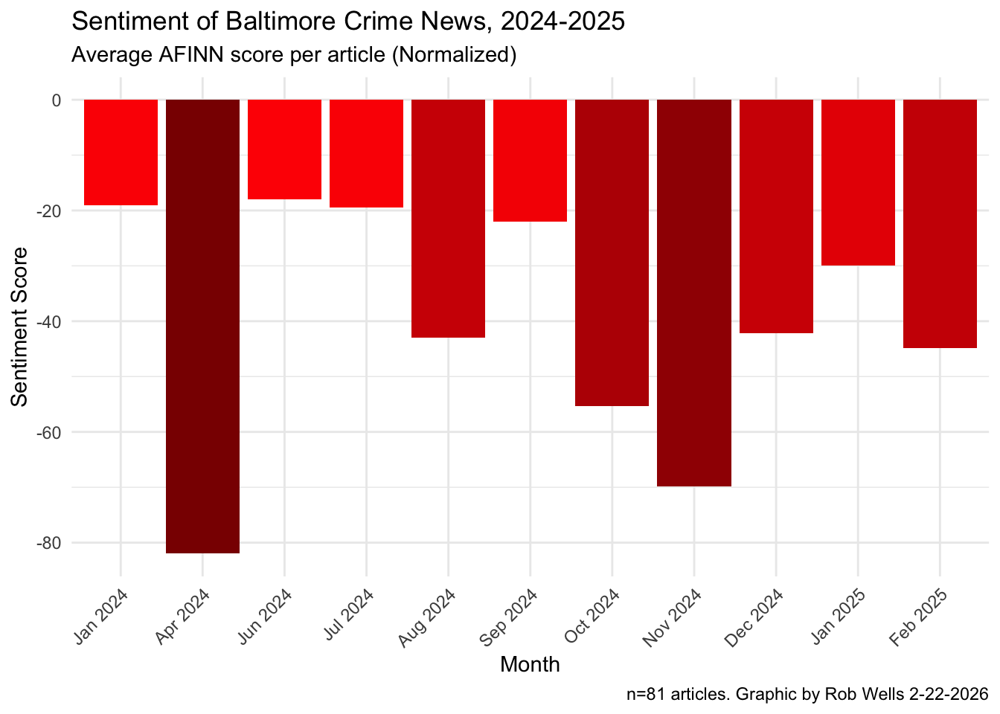

#Install packages if you don't have them already
# install.packages("tidyverse")
# install.packages("tidytext")
# install.packages("quanteda")
# install.packages("readtext")
# install.packages("DT")
# install.packages("rio")
# install.packages("lubridate")
# install.packages("udpipe")
# install.packages("spacyr")
# install.packages("zoo")
library(tidyverse)
library(tidytext)
library(quanteda)
library(readtext)
library(DT)
library(lubridate)
library(rio)
library(udpipe)
library(spacyr)
library(zoo)From Chaos to Narrative:
Using R For Story Discovery in Document Collections
NICAR 2025
Time: Thursday, March 5: 3:45 p.m. to 4:45 1p.m.
Location: Room 201, BYO computer lab
ver. 3/2/2026.
Link to Github repo - select NICAR_Text_analysis_2026
This hands-on session will show how to analyze a large batch of files to find common themes and narratives. We will use R and the Tidytext package to explore common words, analyze sentiment, and then the Quanteda package to examine keywords in the story context.
This code demonstrates text processing, data cleaning and the creation of bigrams and sentiment analysis from news coverage of lynching.
Rob Wells, Ph.D.
Philip Merrill College of Journalism, University of Maryland.
robwells@umd.edu | LinkedIn.
Tiasia Saunders
Fellow, Howard Center for Investigative Journalism.
Philip Merrill College of Journalism, University of Maryland.
tiasias3@umd.edu | LinkedIn.
Credits:
- Julia Silge & David Robinson, Text Mining with R
Load software
These projects led to the workflow that I use in research and for classes
Load & process raw text
baltimore <- read_csv ("assets/bmore.csv") Quick view of any entry by row
wrapped_text <- strwrap(as.character(baltimore$text[5]), width = 60)
writeLines(wrapped_text, "temp_text.txt")
#file.edit("temp_text.txt")We now have 81 articles, one row per article, with relevant metadata. But the cleaning is not over. Check publication names for standardization.
baltimore |>
count(publication) |>
arrange(desc(n))# A tibble: 22 × 2
publication n
<chr> <int>
1 The Baltimore Sun 38
2 Targeted News Service 7
3 Legal Monitor Worldwide 6
4 States News Service 4
5 Impact News Service 3
6 The Daily Record (Baltimore, MD) 3
7 CE Noticias Financieras English 2
8 MENAFN - Business & Finance News (English) 2
9 MailOnline 2
10 manchestereveningnews.co.uk 2
# ℹ 12 more rowsGraph article distribution by month
# library(zoo)
baltimore <- baltimore |>
mutate(yearmo = as.yearmon(date))baltimore |>
count(months = yearmo, name = "total") |>
ggplot(aes(x = factor(months), y = total, fill = total)) +
geom_col() +
theme(legend.position = "none", axis.text.x = element_text(angle=45, hjust = 1)) +
#coord_flip() +
labs(title = "Distribution by Month",
caption = "n=81 articles, 2024-2025. Graphic by Rob Wells. 2-22-2026",
x = "Total",
y = "")
Bigrams
bigrams <- baltimore |>
select(text) |>
mutate(text = str_squish(text)) |>
mutate(text = tolower(text)) |>
mutate(text = str_replace_all(text, "- ", "")) |>
unnest_tokens(bigram, text, token="ngrams", n=2 ) |>
separate(bigram, c("word1", "word2"), sep = " ") |>
filter(!word1 %in% stop_words$word) |>
filter(!word2 %in% stop_words$word) |>
count(word1, word2, sort = TRUE) |>
filter(!is.na(word1))
bigrams# A tibble: 8,925 × 3
word1 word2 n
<chr> <chr> <int>
1 baltimore city 104
2 law enforcement 79
3 violent crime 68
4 police department 65
5 baltimore police 50
6 attorney's office 47
7 u.s attorney 41
8 public safety 40
9 state's attorney 40
10 gun violence 35
# ℹ 8,915 more rowsTop 20 bigrams
top_20_bigrams <- bigrams |>
top_n(20) |>
mutate(bigram = paste(word1, " ", word2)) |>
select(bigram, n)Selecting by ntop_20_bigrams# A tibble: 21 × 2
bigram n
<chr> <int>
1 baltimore city 104
2 law enforcement 79
3 violent crime 68
4 police department 65
5 baltimore police 50
6 attorney's office 47
7 u.s attorney 41
8 public safety 40
9 state's attorney 40
10 gun violence 35
# ℹ 11 more rowsCreate a chart
ggplot(top_20_bigrams, aes(x = reorder(bigram, n), y = n, fill=n)) +
geom_bar(stat = "identity") +
theme(legend.position = "none") +
coord_flip() +
labs(title = "Top Two-Word phrases in Baltimore coverage",
caption = "n=81 articles, 2024-2025. Graphic by Rob Wells. 2-22-2026",
x = "Phrase",
y = "Count of terms")
Sentiment analysis
Basic
# load sentiment dictionary
afinn <- get_sentiments("afinn")
bing <- get_sentiments("bing")
nrc <- get_sentiments("nrc")#tokenize the dataframe, grouping by article number
sentiment <- baltimore |>
select(text) |>
mutate(article_nmbr = row_number()) |>
mutate(text = str_squish(text)) |>
mutate(text = tolower(text)) |>
mutate(text = str_replace_all(text, "- ", "")) |>
group_by(article_nmbr) |>
unnest_tokens(tokens, text) |>
filter(!tokens %in% stop_words$word)
# Sentiment analysis by joining the tokenized words with the AFINN lexicon
sentiment_analysis <- sentiment |>
inner_join(afinn, by = c("tokens"="word")) |>
group_by(article_nmbr) |>
summarize(sentiment = sum(value), .groups = "drop")
# aggregate at article level, total sentiment score (Positive or Negative)
sentiment_analysis <- sentiment_analysis |>
group_by(article_nmbr) |>
mutate(sentiment_type = ifelse(sentiment >= 0, "Positive", "Negative"))Sentiment By Month
# Tokenize, keep yearmo
sentiment_tokens <- baltimore |>
select(yearmo, text) |>
mutate(article_nmbr = row_number()) |>
mutate(text = str_squish(text)) |>
mutate(text = tolower(text)) |>
mutate(text = str_replace_all(text, "- ", "")) |>
group_by(article_nmbr, yearmo) |>
unnest_tokens(tokens, text) |>
filter(!tokens %in% stop_words$word)
# Join with AFINN and summarize
sentiment_month <- sentiment_tokens |>
inner_join(afinn, by = c("tokens" = "word")) |>
# Group by yearmo here so the metadata persists
group_by(yearmo) |>
summarize(sentiment = sum(value), .groups = "drop") |>
mutate(sentiment_type = ifelse(sentiment >= 0, "Positive", "Negative"))Sentiment by month, “per article”
# Sentiment analysis aggregated by month with "per article" normalization
sentiment_per_article <- sentiment_tokens |>
inner_join(afinn, by = c("tokens" = "word")) |>
group_by(yearmo) |>
summarize(
total_sentiment = sum(value),
article_count = n_distinct(article_nmbr),
# This is your "per capita" / per article metric
sentiment_per_article = total_sentiment / article_count,
.groups = "drop"
) |>
mutate(sentiment_type = ifelse(sentiment_per_article >= 0, "Positive", "Negative"))
# Quick check of the results
print(sentiment_per_article)# A tibble: 11 × 5
yearmo total_sentiment article_count sentiment_per_article sentiment_type
<yearmon> <dbl> <int> <dbl> <chr>
1 Jan 2024 -19 1 -19 Negative
2 Apr 2024 -82 1 -82 Negative
3 Jun 2024 -18 1 -18 Negative
4 Jul 2024 -39 2 -19.5 Negative
5 Aug 2024 -43 1 -43 Negative
6 Sep 2024 -22 1 -22 Negative
7 Oct 2024 -443 8 -55.4 Negative
8 Nov 2024 -838 12 -69.8 Negative
9 Dec 2024 -549 13 -42.2 Negative
10 Jan 2025 -1050 35 -30 Negative
11 Feb 2025 -269 6 -44.8 Negative Chart sentiment by article
ggplot(sentiment_per_article, aes(x = factor(yearmo), y = sentiment_per_article, fill = sentiment_per_article)) +
geom_col() +
# This creates a gradient from light red to dark red
scale_fill_gradient(low = "darkred", high = "red") +
theme_minimal() +
theme(
legend.position = "none",
axis.text.x = element_text(angle = 45, hjust = 1)
) +
labs(
title = "Sentiment of Baltimore Crime News, 2024-2025",
subtitle = "Average AFINN score per article (Normalized)",
caption = "n=81 articles. Graphic by Rob Wells 2-22-2026",
x = "Month",
y = "Sentiment Score"
)
Examine Top Negative Phrases
negative_bigrams <- baltimore |>
select(text) |>
mutate(text = str_squish(text)) |>
mutate(text = tolower(text)) |>
mutate(text = str_replace_all(text, "- ", "")) |>
unnest_tokens(bigram, text, token="ngrams", n=2) |>
separate(bigram, c("word1", "word2"), sep = " ") |>
filter(!word1 %in% stop_words$word) |>
filter(!word2 %in% stop_words$word) |>
count(word1, word2, sort = TRUE) |>
filter(!is.na(word1)) |>
mutate(bigram = paste(word1, word2)) |>
# Join sentiment for word1
left_join(afinn, by = c("word1" = "word")) |>
rename(value1 = value) |>
# Join sentiment for word2
left_join(afinn, by = c("word2" = "word")) |>
rename(value2 = value) |>
# Combine sentiment scores
mutate(
total_sentiment = coalesce(value1, 0) + coalesce(value2, 0)
) |>
# Keep only negative bigrams
filter(total_sentiment < 0) |>
# Optional: sort by most negative
arrange(total_sentiment)
negative_bigrams |> head(20)# A tibble: 20 × 7
word1 word2 n bigram value1 value2 total_sentiment
<chr> <chr> <int> <chr> <dbl> <dbl> <dbl>
1 fraud conspiracy 1 fraud conspiracy -4 -3 -7
2 violent crime 68 violent crime -3 -3 -6
3 hate crime 8 hate crime -3 -3 -6
4 violent criminal 5 violent criminal -3 -3 -6
5 crime crisis 1 crime crisis -3 -3 -6
6 felony criminal 1 felony criminal -3 -3 -6
7 violence destruction 1 violence destruct… -3 -3 -6
8 violence victims 1 violence victims -3 -3 -6
9 violent criminals 1 violent criminals -3 -3 -6
10 violence interruption 5 violence interrup… -3 -2 -5
11 criminal charges 4 criminal charges -3 -2 -5
12 blaming crime 2 blaming crime -2 -3 -5
13 risk losing 1 risk losing -2 -3 -5
14 scams damage 1 scams damage -2 -3 -5
15 severe crime 1 severe crime -2 -3 -5
16 suspected fraudulent 1 suspected fraudul… -1 -4 -5
17 victims trapped 1 victims trapped -3 -2 -5
18 violence touted 1 violence touted -3 -2 -5
19 violent conflicts 1 violent conflicts -3 -2 -5
20 violent offender 1 violent offender -3 -2 -5Speech Parsing
It uses the udpipe package in R
Tokenization, Parts of Speech Tagging, Lemmatization and Dependency Parsing with the ‘UDPipe’ ‘NLP’ Toolkit. This natural language processing toolkit provides language-agnostic ‘tokenization’, ‘parts of speech tagging’, ‘lemmatization’ and ‘dependency parsing’ of raw text.
This code loads an English language model to permit tagging of parts of speech.
This version only deals with adjectives.
It then counts all adjectives across all articles and then counts adjectives by article.
Credit to Claude.ai for providing the basis of this code.
Load English language model
Annotate parts of speech on articles
# Then run your annotation
annotated_text <- udpipe_annotate(udmodel,
x = baltimore$text,
doc_id = baltimore$index,
parser = "default",
tagger = "default")
annotated_df <- as.data.frame(annotated_text)The annotated_df columns follow a “CoNLL-U” format for annotated linguistic data in Universal Dependencies. It permits analysis of grammatical and syntactic structure of text.
Breaking down the details in an annotated dataframe from UDPipe:
doc_id: Identifier for the document - this matches harris_articles_df$filename.
paragraph_id: Identifier for paragraphs within each document.
sentence_id: Identifier for sentences within each document.
sentence: The full text of the sentence.
token_id: Identifier for each token (word, punctuation) within a sentence.
token: The actual word or punctuation mark.
lemma: The base or dictionary form of the token (e.g., “running” → “run”).
upos: Universal Part of Speech tag - a standardized grammatical category (e.g., NOUN, VERB, ADJ).xpos: Language-specific part of speech tag - more detailed than upos, varies by language. feats: Morphological features - additional grammatical information like Number=Sing, Tense=Past.
head_token_id: The ID of the token that the current token depends on in the dependency parse.
dep_rel: Dependency relation - describes the syntactic relationship between a token and its head (e.g., “nsubj” for nominal subject).
deps: Enhanced dependency graph in the format of head-relation pairs.
misc: Miscellaneous information that doesn’t fit elsewhere, often contains spans of tokens or other metadata.
Learn more about Universal Dependencies format
A nerdy paper about this process Tokenizing, POS Tagging, Lemmatizing and Parsing UD 2.0 with UDPipe
Count adjectives
# Filter for adjectives (upos = "ADJ") and count frequencies
adjective_counts <- annotated_df |>
filter(upos == "ADJ") |>
group_by(token) |>
summarise(
frequency = n(),
articles = n_distinct(doc_id)
) |>
arrange(desc(frequency))
datatable(adjective_counts,
caption = "Top adjectives in Baltimore crime coverage",
options = list(pageLength = 10)) Interesting results:
- violent is #3, appears 101 times in 40 articles. Is this racialized?
- criminal is #4, appears 79 times in 28 articles.
- illegal is #16, appears 35 times in 16 articles. Is this a focus on “illegal activity” or “illegal behavior”? Or “illegal drugs”?
- safer is #21, appears 27 times in 15 articles. Is this a focus on “safer communities” or “safer neighborhoods”? Or “safer streets”?
Extract adjective-noun pairs
This section extracts adjective-noun pairs where the adjective directly modifies the noun. It then tabulates the pairs by frequency and by article.
adj_noun_pairs <- annotated_df |>
inner_join(
annotated_df |> select(doc_id, sentence_id, token, token_id, upos),
by = c("doc_id", "sentence_id", "head_token_id" = "token_id")
) |>
# Filter for adjectives modifying nouns
filter(
dep_rel == "amod" & # amod = adjectival modifier
upos.x == "ADJ" & # first token is adjective
upos.y == "NOUN" # head word is noun
) |>
# Select and rename relevant columns
select(
article_id = doc_id,
sentence_id,
adjective = token.x,
noun = token.y
)
# Count frequencies of adjective-noun pairs
adj_noun_counts <- adj_noun_pairs |>
group_by(adjective, noun) |>
summarise(
frequency = n(),
articles = n_distinct(article_id)
) |>
arrange(desc(frequency))datatable(adj_noun_counts,
caption = "Top adjectives-noun pairs in Baltimore coverage",
options = list(pageLength = 10)) Interesting results
- violent crime, #1, 37 times in 22 articles
- young people, #13, 9 times in 6 articles
- public safety, #4, 21 times in 12 articles
- ghost guns, #16, 8 times in 5 articles
SpaCy parsing
“Industrial-Strength Natural Language Processing”
This is a python package that we will load in R. It’s much more sophisticated than udpipe.
# Initialize spacy (one-time setup required: spacy_install())
# Load English model. Other languages available
spacy_initialize(model = "en_core_web_sm")successfully initialized (spaCy Version: 3.8.11, language model: en_core_web_sm)text <- data.frame(
doc_id = baltimore$index,
text = baltimore$text,
stringsAsFactors = FALSE
)
# Parse with spacyr
parsed <- spacy_parse(text, entity = TRUE,
lemma = TRUE,
pos = TRUE,
tag= TRUE,
dependency = TRUE )Spacy Adjective-noun pairs
# Create adjective-noun pairs using spaCy output
spacy_adj_noun_pairs <- parsed |>
inner_join(
parsed |> select(doc_id, sentence_id, token, token_id, pos),
by = c("doc_id", "sentence_id", "head_token_id" = "token_id"),
suffix = c("_adj", "_noun")
) |>
# Filter for adjectives modifying nouns
filter(
dep_rel == "amod" & # amod = adjectival modifier
pos_adj == "ADJ" & # first token is adjective
pos_noun == "NOUN" # head word is noun
) |>
# Select and rename relevant columns
select(
article_id = doc_id,
sentence_id,
adjective = token_adj,
noun = token_noun
)
# Count frequencies of adjective-noun pairs
spacy_adj_noun_counts <- spacy_adj_noun_pairs |>
group_by(adjective, noun) |>
summarise(
frequency = n(),
articles = n_distinct(article_id),
.groups = "drop"
) |>
arrange(desc(frequency))Create Datatable for spaCy output
# Display results
datatable(spacy_adj_noun_counts,
caption = "Spacy Top adjective-noun pairs in Baltimore crime coverage",
options = list(pageLength = 10))Examine Keywords, Phrases in Context
Process Text Corpus Object
# Create a unique document ID for each article
baltimore <- baltimore |>
mutate(doc_id = paste0("article_", row_number()))
# Create a quanteda corpus using the text column
library(quanteda)
my_corpus <- corpus(baltimore, text_field = "text")
# Add metadata (optional but useful)
docvars(my_corpus)$yearmo <- baltimore$yearmo[Search for the term ‘media’] {style=“font-size: 18px; font-weight: bold;”}
# Tokenize corpus
my_tokens <- tokens(my_corpus)
# KWIC search
kwic_media <- kwic(my_tokens, pattern = "media", valuetype = "fixed") |>
as.data.frame() |>
mutate(doc_id = docname)Search Journalism Terms
media_narratives <- kwic(my_tokens,
pattern = c("media", "reporter", "newspaper", "journalist"), window = 20,
valuetype = "fixed") |>
as.data.frame() |>
mutate(doc_id = docname)
#You can adjust the number of words on either side with the window variableCreate Datatable
media_narratives_table <- media_narratives |>
select(doc_id, pre, keyword, post)
datatable(media_narratives_table,
caption = "Journalism Terms in Context",
options = list(pageLength = 20))Starting Your Own Project?
“How to get a pile of documents processed for machine learning”
Saturday, Room 205, 10:15 a.m.- 11:15 a.m.
Questions?
Rob Wells, Ph.D.
Philip Merrill College of Journalism, University of Maryland.
robwells@umd.edu | LinkedIn.
Tiasia Saunders
Fellow, Howard Center for Investigative Journalism.
Philip Merrill College of Journalism, University of Maryland.
tiasias3@umd.edu | LinkedIn.
–30–